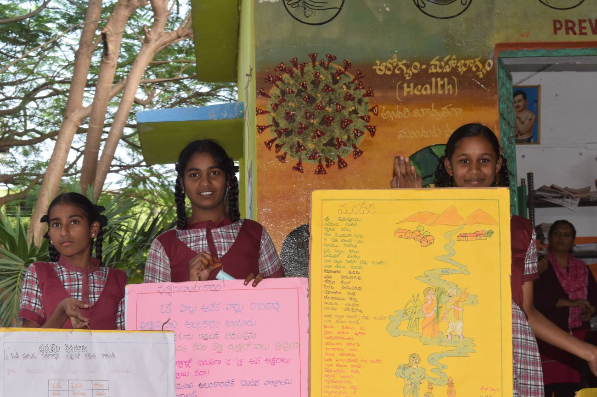

In today's rapidly advancing digital age, access to technology, information and digital literacy are crucial for personal growth, professional success, and societal development. However, while urban areas often thrive in technological advancements, rural communities, face significant challenges in bridging the digital divide. Our recent field visits to rural schools in Telangana have shed light on the pressing need to address these challenges and empower rural students for a digital future.
The digital divide refer to the gap between those who have access to digital technologies and internet and who do not. In rural telangana, this gap manifest in various forms, including limited access to computer, outdated infrastrucucture, inadequate teaching training, and poor information.
Empowering Rural Students in Telangana for the Digital Age
One of the glaring issue uncovered during field visit was the lack of digital infrastructure in school of rural areas. There is limited availability of computers in rural schools. Moreover, the existing computers are non-functionals, highlights the urgent need for maintenance and upgrades.
Another criticals challenges find was the lack of digital literacy among teachers. Lack of adequate training and support, teachers struggles to effectively impart digital knowledge to their students. Thus, comprehensive teacher training program focusing on latest technological advancements and digital teaching methodology are essential to bridge this gap.
Despite the challenges, field visit also reveled that remarkable creativity and innovation among rural students. Many expressed a strong interest in technology related field. Such as blog creation, youtube content creation, making reels and so on. However, limited exposure to technological changes, digital knowledge, internet connection, and poor information hampers their ability to channel their potential effectively.
Adipisci vero culpa, eius nobis soluta. Dolore, maxime ullam ipsam quidem, dolor distinctio similique asperiores voluptas enim, exercitationem ratione aut adipisci modi quod quibusdam iusto, voluptates beatae iure nemo itaque laborum. Consequuntur et pariatur totam fuga eligendi vero dolorum provident. Voluptatibus, veritatis. Beatae numquam nam ab voluptatibus culpa, tenetur recusandae!
To address the digital literacy challenges in the telangana villages, a multifaceted approach is needed. First of that, attention should be given to addressing the shortage of computers in rural schools. Initiatives to repair non-functional computers and provides additionals divices are essential to ensure equitable access to digital resources. Comprehensive teachers training program should be implemented to equip teachers with the necessary skills and knowledge to effectively teach digital literacy.

It is universally accepted that information is the core of all the developmental activities. Therefore providing vital information to the rural population plays a significant role.Providing opportunity to get access to information can expose students to various opportunities in the field of technology. This will empower students to make informed decision about their future career.
Therefore, the finding from the field visits underscore the urgent need to address digital literacy challenges in unconnecte schools in Telangana villages. by improving infrastructure, enhancing teacher training, and provides opportunity to get information, we can unlock the untapped potential of rural students and enable them to thrive in the digital age. Bridging the digital divide is not just as educational imperative but a pathway to empower the next generation in unconnected area to participate in and contribute to the broader technological landscape . Through concerted effort and collaboration, we can ensure that no student is left behind in the digital revolution.